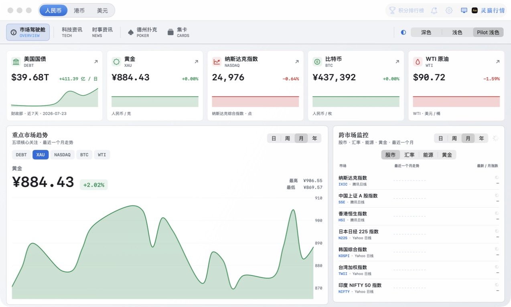

DEBT美国国债US debt
APPLE 设备上的全球市场驾驶舱
A GLOBAL MARKET COCKPIT FOR APPLE DEVICES
Lynncat Markets
灵猫行情Calm markets. Clear signals.
把美债、黄金、纳指、比特币与原油放进同一个安静、清晰的实时界面。先看到重要变化，再进入每个品种的完整历史、宏观与资讯上下文。
Bring US Treasury data, gold, Nasdaq, Bitcoin and crude oil into one calm real-time view. See the signal first, then open the full history, macro context and news for each market.

五个重点，一眼看完
Five priorities, one glance
主页优先展示真正需要持续关注的资产
The home view keeps the most important markets first
XAU黄金Gold
NASDAQ纳斯达克Nasdaq
BTC比特币Bitcoin
WTIWTI 原油WTI crude
MARKET COCKPIT
MARKET COCKPIT
先看全局，再进入细节
See the whole market before opening the detail
主页把五项重点资产、最近一个月趋势与跨市场监控放在同一屏。除资讯外，每张资产卡都直接进入独立详情页，不需要在顶部分页里来回寻找。
The home view places five priority assets, one-month trends and cross-market monitoring on a single screen. Every asset card opens its own detail view, while news remains fast to scan.
平滑历史曲线Smooth historical curves
重点市场与跨市场监控均支持按日、周、月、年切换，默认展示最近一个月。
Switch between day, week, month and year across priority and cross-market charts, with one month as the default.
区域与币种联动Region-aware currencies
人民币、港币、美元之间切换，报价、换算与美元兑人民币汇率保持一致。
Switch between CNY, HKD and USD while quotes, conversions and USD/CNY context stay aligned.
本机价格提醒Local price alerts
为关键价位建立提醒，规则保存在设备上，行情页面保持专注。
Create alerts for important levels. Rules stay on your device so the market view remains focused.
CROSS MARKET
跨市场监控Cross-market monitor
1M
IXIC纳斯达克指数Nasdaq Composite
SSE中国上证 A 股指数Shanghai Composite
HSI香港恒生指数Hang Seng Index
N225日本日经 225 指数Nikkei 225
KOSPI韩国综合指数KOSPI Composite
TWII台湾加权指数Taiwan Weighted
NIFTY印度 NIFTY 50India NIFTY 50
USD/CNY美元兑人民币US dollar / yuan
EUR/USD欧元兑美元Euro / US dollar
GBP/USD英镑兑美元Pound / US dollar
USD/JPY美元兑日元US dollar / yen
USD/KRW美元兑韩元US dollar / won
USD/RUB美元兑卢布US dollar / ruble
USD/INR美元兑印度卢比US dollar / rupee
WTI美国原油US crude oil
BRENT布伦特原油Brent crude
RBOB美国无铅汽油US unleaded gasoline
CN92国内 92 号汽油China 92 gasoline
CN95国内 95 号汽油China 95 gasoline
CN98国内 98 号汽油China 98 gasoline
CN0国内 0 号柴油China No. 0 diesel
COMEX美国黄金报价US gold quote
XAU/USD伦敦金报价London gold
SGE上海黄金现货Shanghai spot gold
SHFE上海黄金期货Shanghai gold futures
SHUIBEI水贝现货参考Shuibei spot reference
XAUXAG黄金白银比Gold / silver ratio
XAUBTC黄金比特币比Gold / Bitcoin ratio
MARKET DEPTH
每个品种，都有自己的完整页面
Every market opens into its own complete view
主界面负责判断优先级，详情页负责把价格、历史、持仓、比值和相关新闻讲清楚。
The cockpit sets priorities. Detail views bring together price, history, holdings, ratios and relevant news.
01
黄金中心
Gold center
实时金价与历年走势、中国央行最近一年月度增减持、美国黄金 ETF 最近一个月每日持仓变化，以及金银比和黄金比特币比。
Live gold, historical trends, monthly PBOC reserve changes, daily US gold ETF holdings, the gold/silver ratio and the gold/Bitcoin ratio.
02
美股与美债
US stocks and debt
纳斯达克、道琼斯与标普 500 同屏查看，包含核心股票价格、涨跌幅和市值；美债页面聚合总债务、期限结构与历史趋势。
Nasdaq, Dow and S&P 500 in one view with key stocks, changes and market values, plus total debt, maturity structure and Treasury history.
03
宏观与资讯
Macro and news
原油与成品油、近期重要经济事件、市场核心利空与支撑，以及可随 App 语言切换的科技和时事资讯。
Crude and refined fuels, recent economic events, key headwinds and supports, plus technology and current news that follows the app language.
MARKET CONTEXT
不只告诉你价格，还告诉你市场正在等什么
Not just the price, but what the market is waiting for
近期重要事件与市场核心因素并排呈现，让时间节点、主要利空和主要支撑形成同一条判断链。
Recent events sit beside key market factors so timing, headwinds and supports form one readable chain of context.
近期重要事件Upcoming events按影响级别整理Organized by market impact
- 01央行议息与政策指引Central-bank decisions利率路径 · 声明措辞 · 发布会Rate path · statement · press conference高HIGH
- 02通胀与就业数据Inflation and employmentCPI · PPI · PCE · NFP高HIGH
- 03经济增长数据Growth dataGDP · PMI · Retail sales中MID
- 04美国财政与国债发行US fiscal and Treasury supply拍卖 · 赤字 · 债务上限Auctions · deficit · debt ceiling中MID
- 05能源库存与产量Energy inventories and supplyEIA · OPEC+ · Rig count中MID
- 06科技公司财报Technology earnings指引 · 资本开支 · AI 需求Guidance · capex · AI demand跟踪WATCH
市场核心因素Core market factors宏观与跨资产驱动Macro and cross-asset drivers
主要利空Headwinds
- 实际利率上行Higher real yields压制黄金与高久期资产估值Pressure on gold and long-duration assets
- 美元流动性收紧Tighter dollar liquidity风险资产波动可能放大Can amplify risk-asset volatility
- 能源需求走弱Softer energy demand原油与成品油预期承压Weighs on crude and refined fuels
主要支撑Supports
- 全球央行购金Central-bank gold buying形成长期结构性需求Adds structural long-term demand
- 财政与债务压力Fiscal and debt pressure强化硬资产与避险配置逻辑Supports hard-asset and haven demand
- 科技资本开支Technology capex为核心指数盈利提供观察线索Offers a signal for index earnings
ONE MARKET, EVERY SCREEN
从桌面驾驶舱，到抬腕和锁屏
From the desktop cockpit to your wrist and Lock Screen
每个端保留自己的交互方式，不把 Mac 界面生硬缩小到手机和手表。
Each device keeps the interaction it does best instead of shrinking the Mac interface onto every screen.
Mac多资产驾驶舱Multi-asset cockpit
统一主页、独立详情、菜单栏行情与多品种屏保模式。
Unified home, dedicated details, menu-bar quotes and a multi-market standby view.
iPhone & iPad移动市场上下文Mobile market context
行情、事件与资讯保持轻快，并支持锁屏和灵动岛实时活动。
Fast quotes, events and news with Live Activities on the Lock Screen and Dynamic Island.
Apple Watch抬腕查看重点Priority markets at a glance
核心价格与紧凑走势图，减少层级和持续动画带来的卡顿。
Core prices and compact curves with fewer layers and less continuous animation.
同一套关注清单One priority list深色 · 浅色 · Pilot 浅色Dark · Light · Pilot Light
OPTIONAL ACCOUNT
行情无需绕路，账号能力按需开启
Markets stay immediate. Account features remain optional.
先打开软件看市场，需要积分、排行榜或交流时再使用 Lynncat 账号。核心行情与详情不会被登录页挡住。
Open the app and see the market first. Use a Lynncat account only when you need points, rankings or conversation. Core quotes never sit behind sign-in.
在线积分与排行榜
Online points and ranking
在线时按规则累计 Lynncat 积分，可查看积分排行榜并用于支持的互动功能。
Earn Lynncat points under the in-app rules, view the leaderboard and use points for supported interactions.
按品种独立交流
Conversation by instrument
每个市场品种拥有独立交流流，支持昵称、举报与屏蔽，并按内容规则进行治理。
Each instrument has its own conversation stream with nicknames, reporting, blocking and moderation controls.
水浒集卡与积分互动
Water Margin cards and points
使用在线获得的积分参与集卡；积分不可购买、转让、提现或兑换，不具有现金价值。
Use points earned online for card collecting. Points cannot be purchased, transferred, withdrawn or exchanged and have no cash value.
隐私与内容控制
Privacy and content control
本机提醒规则保存在设备上；交流功能提供举报、屏蔽和公开的管理说明。
Local alert rules stay on-device, while conversation includes reporting, blocking and published moderation information.
全球市场，不必嘈杂。Global markets without the noise.Lynncat Markets